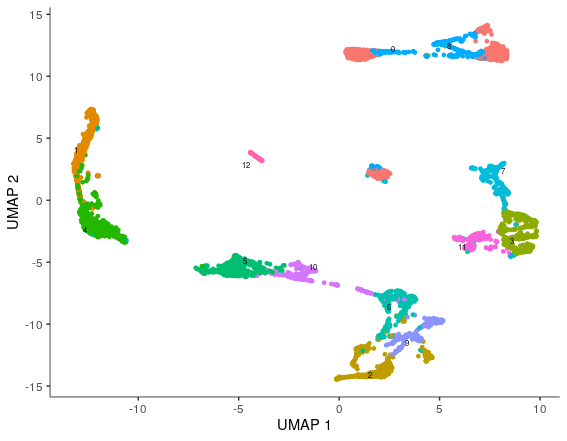
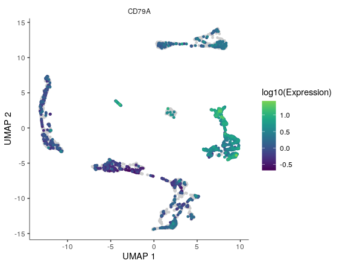
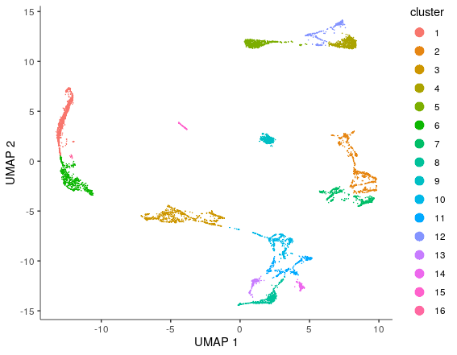
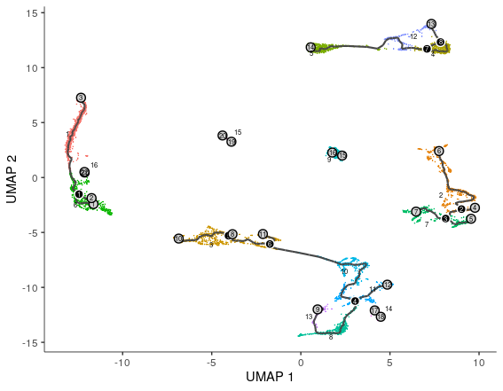
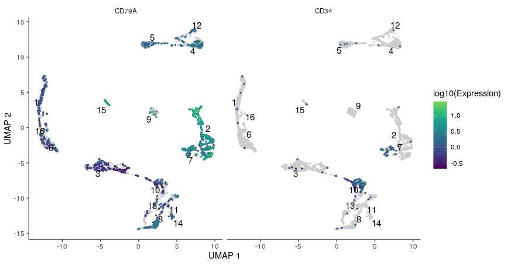
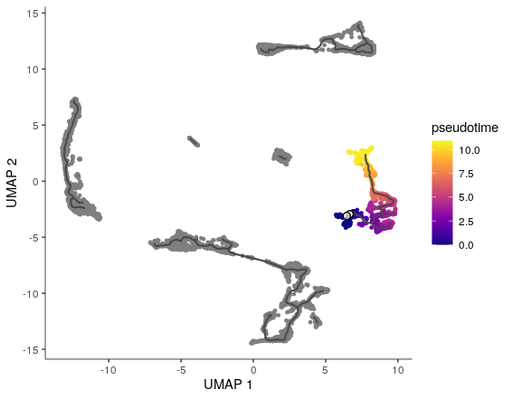
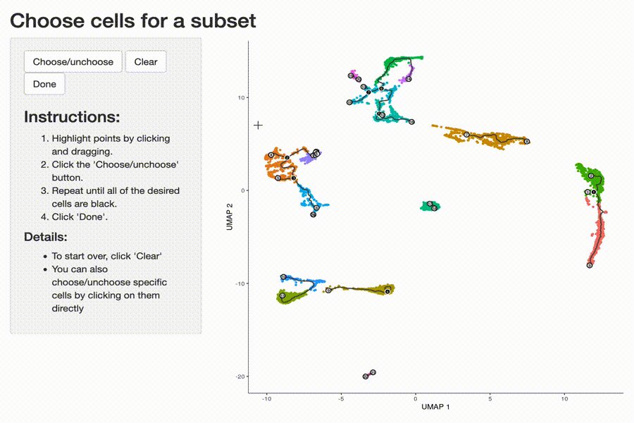
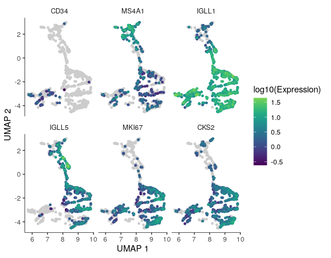
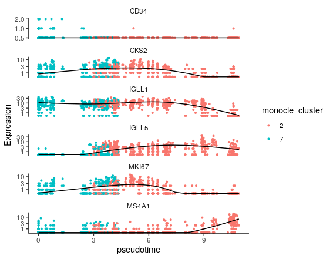

Trajectory analysis (extra)
Material
Exercises
Load the following packages:
library(SingleCellExperiment)
library(scater)
library(slingshot)
library(ggplot2)
library(ggbeeswarm)
Trajectory analysis using Slingshot
This part uses the
Dengdataset
First, download the dataset from github within your Terminal tab as on Day 1:

Type the following commands within the Terminal tab:
cd course_data/
wget https://github.com/hemberg-lab/nrg-paper-figures/blob/master/deng-reads.rds?raw=true
mv deng-reads.rds\?raw\=true deng-reads.rds
Then, within R, import the rds file. the ‘Deng’ dataset is an object of class SingleCellExperiment.
deng_SCE <- readRDS("course_data/deng-reads.rds")
Perform the first steps of the analysis. The deng_SCE object contains cells that were isolated at different stages of mouse embryogenesis, from the zygote stage to the late blastula.
The levels of the cell type are in alphabetical order. We now change the level order for plotting in developmental order:
deng_SCE$cell_type2 <- factor(deng_SCE$cell_type2,
levels = c("zy",
"early2cell",
"mid2cell",
"late2cell",
"4cell",
"8cell",
"16cell",
"earlyblast",
"midblast",
"lateblast"))
We can run a PCA directly on the object of class SingleCellExperiment with the function runPCA:
deng_SCE <- scater::runPCA(deng_SCE, ncomponents = 50)
Use the reducedDim function to access the PCA and store the results.
pca <- SingleCellExperiment::reducedDim(deng_SCE, "PCA")
Describe how the PCA is stored in a matrix. Why does it have this structure?
head(pca)
Add PCA data to the deng_SCE object.
deng_SCE$PC1 <- pca[, 1]
deng_SCE$PC2 <- pca[, 2]
Plot PC biplot with cells colored by cell_type2.
colData(deng_SCE) accesses the cell metadata DataFrame object for deng_SCE.
Look at Figure 1A of the paper as a comparison to your PC biplot.
ggplot(as.data.frame(colData(deng_SCE)), aes(x = PC1, y = PC2, color = cell_type2)) +
geom_point(size=2, shape=20) +
theme_classic() +
xlab("PC1") + ylab("PC2") + ggtitle("PC biplot")
PCA is a simple approach and can be good to compare to more complex algorithms designed to capture differentiation processes. As a simple measure of pseudotime we can use the coordinates of PC1. Plot PC1 vs cell_type2.
deng_SCE$pseudotime_PC1 <- rank(deng_SCE$PC1) # rank cells by their PC1 score
Create a jitter plot
ggplot(as.data.frame(colData(deng_SCE)), aes(x = pseudotime_PC1, y = cell_type2,
colour = cell_type2)) +
ggbeeswarm::geom_quasirandom(groupOnX = FALSE) +
theme_classic() +
xlab("PC1") + ylab("Timepoint") +
ggtitle("Cells ordered by first principal component")
Read the Slingshot documentation (?slingshot::slingshot) and then run Slingshot below.
sce <- slingshot::slingshot(deng_SCE, reducedDim = 'PCA')
Exercise: Given your understanding of the algorithm and the documentation, what is one major set of parameters we omitted here when running Slingshot?
Answer
We didn’t set the parameter clusterLabels
Here is a custom function to plot the PCA based on a slingshot object. Run it in the console to add it to your global environment:
PCAplot_slingshot <- function(sce, draw_lines = TRUE, variable = NULL, legend = FALSE, ...){
# set palette for factorial variables
palf <- colorRampPalette(RColorBrewer::brewer.pal(8, "Set2"))
# set palette for numeric variables
paln <- colorRampPalette(RColorBrewer::brewer.pal(9, "Blues"))
# extract pca from SingleCellExperiment object
pca <- SingleCellExperiment::reducedDims(sce)$PCA
if(is.null(variable)){
col <- "black"
}
if(is.character(variable)){
variable <- as.factor(variable)
}
if(is.factor(variable)){
colpal <- palf(length(levels(variable)))
colors <- colpal[variable]
}
if(is.numeric(variable)){
colpal <- paln(50)
colors <- colpal[cut(variable,breaks=50)]
}
# draw the plot
plot(pca, bg = colors, pch = 21)
# draw lines
if(draw_lines){
lines(slingshot::SlingshotDataSet(sce), lwd = 2, ... )
}
# add legend
if(legend & is.factor(variable)){
legend("bottomright", pt.bg = colpal,legend = levels(variable),pch=21)
}
}
Have a look at the PCA with the slingshot pseudotime line:
PCAplot_slingshot(sce, variable = sce$slingPseudotime_1, draw_lines = TRUE)
Also have a look at pseudotime versus cell type:
ggplot(as.data.frame(colData(deng_SCE)), aes(x = sce$slingPseudotime_1,
y = cell_type2,
colour = cell_type2)) +
ggbeeswarm::geom_quasirandom(groupOnX = FALSE) +
theme_classic() +
xlab("Slingshot pseudotime") + ylab("Timepoint") +
ggtitle("Cells ordered by Slingshot pseudotime")
This already looks pretty good. Let’s see whether we can improve it. First we generate clusters by using Seurat:
gcdata <- Seurat::CreateSeuratObject(counts = SingleCellExperiment::counts(deng_SCE),
project = "slingshot")
gcdata <- Seurat::NormalizeData(object = gcdata,
normalization.method = "LogNormalize",
scale.factor = 10000)
gcdata <- Seurat::FindVariableFeatures(object = gcdata,
mean.function = ExpMean,
dispersion.function = LogVMR)
gcdata <- Seurat::ScaleData(object = gcdata,
do.center = T,
do.scale = F)
gcdata <- Seurat::RunPCA(object = gcdata,
pc.genes = gcdata@var.genes)
gcdata <- Seurat::FindNeighbors(gcdata,
reduction = "pca",
dims = 1:5)
# clustering with resolution of 0.6
gcdata <- Seurat::FindClusters(object = gcdata,
resolution = 0.6)
Now we can add these clusters to the slingshot function:
deng_SCE$Seurat_clusters <- as.character(Idents(gcdata)) # go from factor to character
sce <- slingshot::slingshot(deng_SCE,
clusterLabels = 'Seurat_clusters',
reducedDim = 'PCA',
start.clus = "2")
Check how the slingshot object has evolved
SlingshotDataSet(sce)
Plot PC1 versus PC2 colored by slingshot pseudotime:
PCAplot_slingshot(sce, variable = sce$slingPseudotime_2)
Plot Slingshot pseudotime vs cell stage.
ggplot(data.frame(cell_type2 = deng_SCE$cell_type2,
slingPseudotime_1 = sce$slingPseudotime_1),
aes(x = slingPseudotime_1, y = cell_type2,
colour = cell_type2)) +
ggbeeswarm::geom_quasirandom(groupOnX = FALSE) +
theme_classic() +
xlab("Slingshot pseudotime") + ylab("Timepoint") +
ggtitle("Cells ordered by Slingshot pseudotime")
ggplot(data.frame(cell_type2 = deng_SCE$cell_type2,
slingPseudotime_2 = sce$slingPseudotime_2),
aes(x = slingPseudotime_2, y = cell_type2,
colour = cell_type2)) +
ggbeeswarm::geom_quasirandom(groupOnX = FALSE) +
theme_classic() +
xlab("Slingshot pseudotime") + ylab("Timepoint") +
ggtitle("Cells ordered by Slingshot pseudotime")
Particularly the later stages, separation seems to improve. Since we have included the Seurat clustering, we can plot the PCA, with colors according to these clusters:
PCAplot_slingshot(sce,
variable = deng_SCE$Seurat_clusters,
type = 'lineages',
col = 'black',
legend = TRUE)
PCAplot_slingshot(sce,
variable = deng_SCE$cell_type2,
type = 'lineages',
col = 'black',
legend = TRUE)
Exercise: Instead of providing an initial cluster, think of an end cluster that would fit this trajectory analysis and perform the slingshot analysis. Does slingshot find the initial cluster corresponding to the biological correct situation?
Answer
sce <- slingshot::slingshot(deng_SCE,
clusterLabels = 'Seurat_clusters',
reducedDim = 'PCA',
end.clus = c("0", "3", "5")) ## check which would be the best according to bio
Clear your environment:
rm(list = ls())
gc()
.rs.restartR()
Trajectory analysis with monocle3
Not on the cloud server
Currently it’s not possible to use the interactive part of monocole3 on the cloud server. Therefore, these exercises can only be performed locally.
This part showcases how you can use monocle3 to perform a trajectory analysis. First load the seu_int dataset:
seu_int <- readRDS("seu_int_day2_part2.rds")
Load the required package into your environment:
library(monocle3)
Generate a monocle3 object (with class cell_data_set) from our Seurat object:
# get matrix and filter for minimum number of cells and features (the latter is a fix for backward compatibility)
mat_tmp <- seu_int@assays$RNA@counts
seu_tmp <- Seurat::CreateSeuratObject(mat_tmp, min.cells = 3,
min.features = 100)
feature_names <- as.data.frame(rownames(seu_tmp))
rownames(feature_names) <- rownames(seu_tmp)
colnames(feature_names) <- "gene_short_name"
seu_int_monocl <- monocle3::new_cell_data_set(seu_tmp@assays$RNA@counts,
cell_metadata = seu_int@meta.data,
gene_metadata = feature_names)
We pre-process the newly created object. What does it involve? Check:
?preprocess_cds
Preprocess the dataset:
seu_int_monocl <- monocle3::preprocess_cds(seu_int_monocl)
And check out the elbow plot:
monocle3::plot_pc_variance_explained(seu_int_monocl)
Perform UMAP using the implementation in the monocle3 package and its default parameters:
seu_int_monocl <- monocle3::reduce_dimension(seu_int_monocl, reduction_method = "UMAP")
Plot the monocle3 UMAP coloring cells according to the cluster ID ran with Seurat:
monocle3::plot_cells(seu_int_monocl,
color_cells_by = "integrated_snn_res.0.3",
cell_size = 1,
show_trajectory_graph = FALSE)
monocle3::plot_cells(seu_int_monocl, genes = "CD79A",
show_trajectory_graph = FALSE,
cell_size = 1)


Cluster cells using monocle3’s clustering function:
seu_int_monocl <- monocle3::cluster_cells(seu_int_monocl, resolution=0.00025)
monocle3::plot_cells(seu_int_monocl, label_cell_groups = F)

learn graph (i.e. identify trajectory) using monocle3 UMAP and clustering:
seu_int_monocl <- monocle3::learn_graph(seu_int_monocl)
monocle3::plot_cells(seu_int_monocl)

Exercise: Find the CD34+ B-cell cluster in the monocle UMAP. This cluster has a high expressession of CD79A and expresses CD34.
Answer
monocle3::plot_cells(seu_int_monocl, genes = c("CD79A", "CD34"),
show_trajectory_graph = FALSE,
cell_size = 0.7, group_label_size = 4)
Returns:

The left part of cluster 7 has both a high expression of CD79A and CD34.
Select the “initial” cells in the B-cell cluster to calculate pseudotime. The initial cells in this case are the CD34+ B-cells we have just identified. A pop up window will open and you need to click on the “initial” cells (one node per trajectory), then click “Done”.
seu_int_monocl<-monocle3::order_cells(seu_int_monocl)#
monocle3::plot_cells(seu_int_monocl,
color_cells_by = "pseudotime",
label_cell_groups=F,
label_leaves=F,
label_branch_points=FALSE,
graph_label_size=1.5, cell_size = 1)

In order to find genes which expression is affected by pseudtime, we first have to isolate the B-cell cluster. Therefore, extract all cells in the B-cell cluster with the interactive choose_cells function:
seuB <- choose_cells(seu_int_monocl)

Check whether you have selected the right cells:
plot_cells(seuB, show_trajectory_graph = FALSE, cell_size = 1)
Now we can use the cells in this trajectory to test which genes are affected by the trajectory:
pr_test <- graph_test(seuB,
cores=4,
neighbor_graph = "principal_graph")
# order by test statistic
pr_test <- pr_test[order(pr_test$morans_test_statistic,
decreasing = TRUE),]
View(pr_test)
There are some interesting genes in there, for example related to cell cycling (MKI67, CKS2), related to B-cell development (CD34, MS4A1) and immunoglobulins (IGLL1 and IGLL5). We can plot those in the UMAP:
goi <- c("CD34", "MS4A1", "IGLL1", "IGLL5",
"MKI67", "CKS2")
plot_cells(seuB, label_cell_groups=FALSE, genes = goi,
show_trajectory_graph=FALSE, cell_size = 1)

But also against pseudotime:
seuB@colData$monocle_cluster <- clusters(seuB)
plot_genes_in_pseudotime(subset(seuB,
rowData(seuB)$gene_short_name %in% goi),
min_expr=0.5, color_cells_by = "monocle_cluster")
